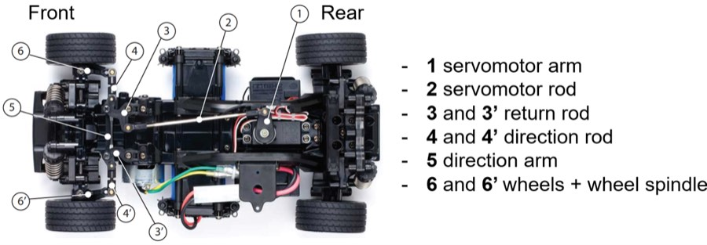
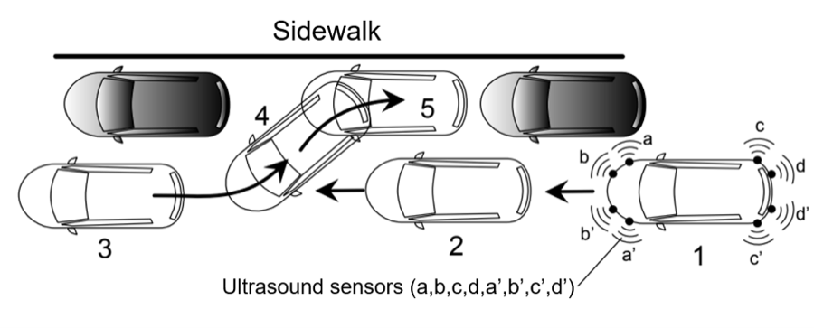
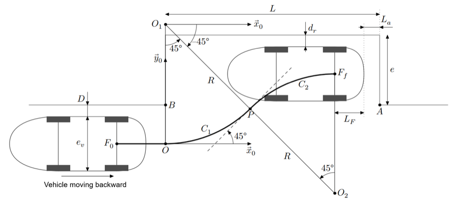
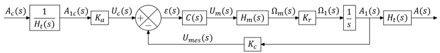
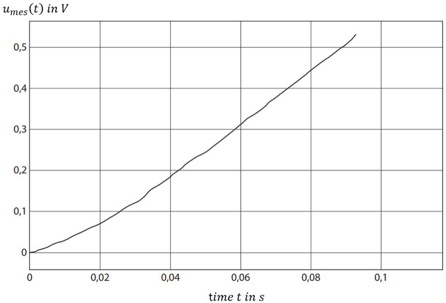

Course project · ENSTA Bretagne
Automated parallel parking with a radio-controlled car
Why a scale model
Production parking assistants control the steering while the driver handles throttle and speed, which is held roughly constant through the manoeuvre. Studying the real thing is difficult: manufacturers' data on the steering components is confidential. A radio-controlled car removes that obstacle — every component can be identified and characterised directly, and tests run on real hardware rather than in simulation only.

Detecting a viable space
While the car drives past a gap, ultrasonic proximity sensors have to answer two questions at once: is this space compatible with the manoeuvre at all, and where are the geometric references the trajectory will be built from? Not every sensor feeds the algorithm — some are reserved for safety, which is a distinction worth making explicitly rather than treating all sensor data as equivalent.


Can the steering follow it?
Planning the trajectory is only half the problem: the steering has to be able to track it. The specification is concrete — zero steady-state error on a step, and a 5% response time of \(t_{r5\%} \leq 0.4\) s.

No datasheet was available for the DC motor or the servo, so the parameters had to be identified experimentally. A series of open-loop step tests recovers the resistance \(R\), inductance \(L\) and inertia \(J_m\) from the potentiometer voltage response:
\[ u_{\text{mes}}(t) = K_m K_c K_r u_0 (t - \tau_m) + K_m K_c K_r \tau_m u_0 e^{-\frac{t}{\tau_m}} \]which gives the first-order motor transfer function
\[ H_m(p) = \frac{K_m}{1 + \tau_m p}, \qquad K_m = \frac{1}{k_e}, \qquad \tau_m = \frac{R J_m}{k_e^2} \]
Scope: the report covers the detection conditions, the trajectory geometry and the identification and validation of the steering model. The planned final section on improving the steering performance was never written up, so there are no closed-loop correction results to report here.